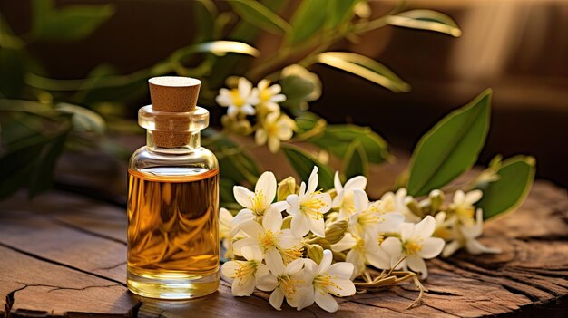

Como Fazer e usar o óleo de Jasmim

O óleo de jasmim é conhecido por seu aroma floral intenso e envolvente, além de suas propriedades terapêuticas e cosméticas. Extraído das flores da Jasminum officinale ou da Jasminum grandiflorum, o óleo de jasmim é amplamente utilizado em aromaterapia devido aos seus efeitos calmantes, afrodisíacos e antidepressivos. Também é um ingrediente valorizado em produtos de cuidados com a pele e perfumes, devido à sua capacidade de hidratar, tonificar e revitalizar a pele. Com seu aroma doce e exótico, o óleo de jasmim é frequentemente associado ao relaxamento e à elevação do espírito.
Como fazer o óleo de jasmim em casa
Embora o óleo de jasmim puro seja geralmente produzido por um processo complexo de extração de solventes, você pode fazer uma versão caseira infundida com o perfume e algumas das propriedades das flores de jasmim. Aqui está um guia para preparar o seu próprio óleo de jasmim em casa:
Ingredientes necessários:
Um punhado de flores frescas de jasmim (certifique-se de colhê-las de manhã cedo, quando seu aroma é mais forte).
Óleo base (como óleo de jojoba, óleo de amêndoas doces ou óleo de coco fracionado).
Modo de preparo:
Colha as flores de jasmim frescas, evitando aquelas que estão murchas ou danificadas.
Espalhe as flores em uma superfície plana por algumas horas para permitir que qualquer umidade seque, pois a umidade pode fazer com que o óleo infundido estrague.
Coloque as flores secas de jasmim em um frasco de vidro limpo e seco.
Despeje o óleo base sobre as flores, garantindo que estejam completamente cobertas.
Feche bem o frasco e coloque-o em um local quente e escuro, como um armário, por cerca de duas semanas. Agite o frasco suavemente todos os dias para ajudar a liberar o aroma das flores no óleo.
Após duas semanas, coe o óleo usando um pano de musselina ou um coador fino para separar as flores do óleo.
Transfira o óleo infundido para um frasco de vidro escuro e limpo para armazenamento. O óleo de jasmim caseiro pode ser armazenado por várias semanas em um local fresco e longe da luz direta.
Como usar o óleo de jasmim
O óleo de jasmim é um produto versátil que pode ser utilizado de diversas maneiras para aproveitar suas propriedades aromáticas e terapêuticas:
Aromaterapia: O aroma do óleo de jasmim é conhecido por suas propriedades calmantes e antidepressivas. Para criar uma atmosfera relaxante, adicione algumas gotas de óleo de jasmim a um difusor ou queimador de óleo. Seu aroma suave e floral pode ajudar a aliviar o estresse, melhorar o humor e promover o relaxamento.
Cuidado com a pele: O óleo de jasmim é ótimo para a pele seca e sensível, pois ajuda a hidratar e tonificar sem causar irritação. Adicione algumas gotas de óleo de jasmim a um óleo base, como óleo de amêndoas doces, e aplique diretamente na pele para hidratação profunda. Ele também pode ajudar a melhorar a elasticidade da pele e a reduzir a aparência de cicatrizes e estrias.
Massagens relaxantes: Use o óleo de jasmim como um óleo de massagem para proporcionar um efeito relaxante e afrodisíaco. Misture o óleo infundido com um óleo transportador e aplique sobre o corpo para aliviar a tensão muscular e promover o relaxamento.
Banhos aromáticos: Para um banho relaxante e perfumado, adicione algumas gotas de óleo de jasmim à água da banheira. O calor do banho ajudará a liberar o aroma calmante do óleo, proporcionando uma experiência de spa em casa que ajuda a aliviar o estresse e a tensão.
Perfume natural: O óleo de jasmim pode ser usado como um perfume natural. Aplique uma pequena quantidade nos pulsos, pescoço ou atrás das orelhas para um aroma floral suave e duradouro ao longo do dia.
Cuidados ao usar o óleo de jasmim
Embora o óleo de jasmim seja seguro para a maioria das pessoas, é sempre importante fazer um teste de alergia antes de usar qualquer óleo essencial na pele. Aplique uma pequena quantidade de óleo diluído no antebraço e aguarde 24 horas para observar se há alguma reação adversa. Além disso, mulheres grávidas ou pessoas com pele sensível devem consultar um profissional de saúde antes de usar o óleo de jasmim. Use o óleo de jasmim como um complemento em sua rotina de cuidados pessoais para aproveitar seus benefícios aromáticos e terapêuticos, sempre respeitando as instruções de uso e dosagens recomendadas.